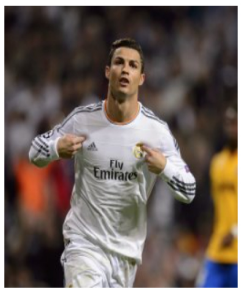

El futbolista, natural de Madeira (Portugal) y actual delantero de Real Madrid C.F., es uno de los deportista mas laureados de todos los tiempos. Son uchos los momentos clave en la biografia de Cristiano Ronaldo, que ha sido considerado el máximo goleador de la historia del Real Madrid y atesora un gran numero de galardones a titulo personal. La bota de Oro, el Balon de Oro y el premio The Best de la FIFA son solo algunos de los reconocimientos que ha obtenido Ronaldo a lo largo de su carrera deportiva.
Juega por el equipo Arabe llamado: Al-Nassar F.C. de la Liga Profesional Saudi. Se unio al club de Arabia Saudita con fecha 30 de diciembre del 2022. Al integrase con sus compañeros lo eligieron como capitan del equipo por unanimidad. Su contrato estarà vigente hasta el año 2027. Su posiciòn en el juego segùn su contrato serà Delantero.
Cristiano Ronaldo empezo su carrera deportiva a los 8 años de edad, cuando ingreso a la escuela de futbol La Andorinha. Como despunto desde tan tierna edad, los clubes C.S. Maritimo y C.D. Nacional pronto mostraron su interes en contar con el jugador. Es por esto que Ronaldo no estudio como el resto de niños de su edad, y aunque trato de compaginar su carrera deportiva asistiendo a clases nocturnas, decidio aparcar sus estudios cuando firmo con el Sporting de Lisboa a los dieciseis de edad.
Cristiando Ronaldo ha recibido un sinfin de galardones y distinciones a lo largo de su carrera deportiva (premios entre los que se encuentran, ni mas ni menos, el Balon de Oro, el Jugador del Año de la UEFA o el Jugador del Mundial de la FIFA). No obstante, Cristiano tambien a recibido una serie de condecoraciones que no estan relacionadas con el mundo del futbol, como pueden ser: